Awaji, Hyogo: things to do, food and stays
Awaji · Hyogo
Awaji
Highlighted on the Hyogo map.
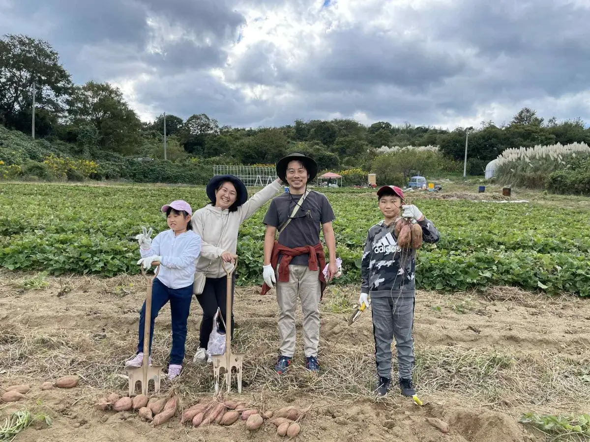
Stay
グランドニッコー淡路
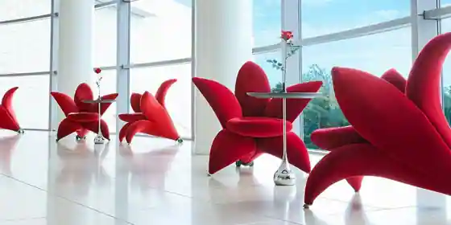
Grand Nikko Awaji
洗心和方
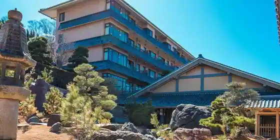
Senshin Waho
亀の井ホテル 淡路島
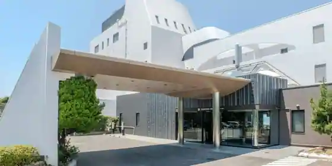
Kame No I Hotel Awaji Shima
Hotel at Zekkeiwotanoshimu Onsen in Tomishima, Awaji with scenic views and local seafood dinners.
S.CORRIDOR
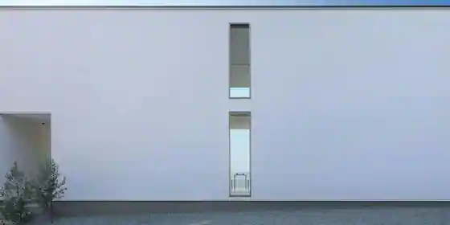
S. CORRIDOR
Inn in Kusakaori, Awaji with one group per day.
グランシャリオ北斗七星135°
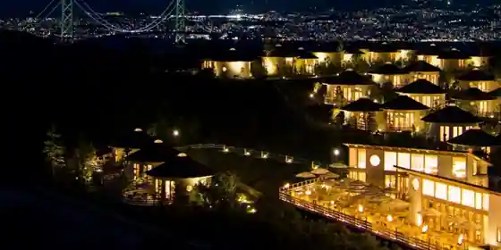
Guranshario Hokuto Nanae 135.
THE ZK WEST COAST
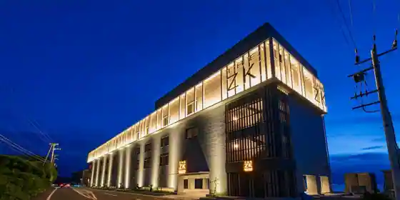
THE ZK WEST COAST
rulu - 縷々
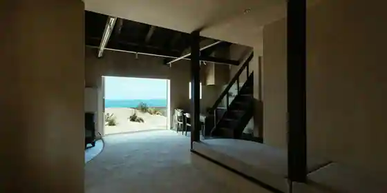
rulu - Ruru
Locokamaguchi
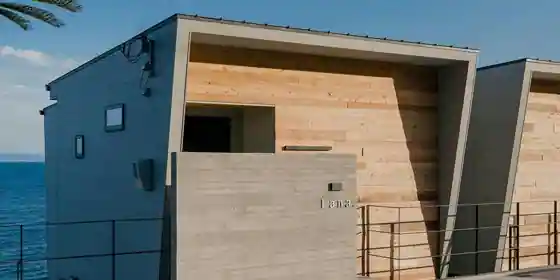
Locokamaguchi
BRIDGE coastal villa
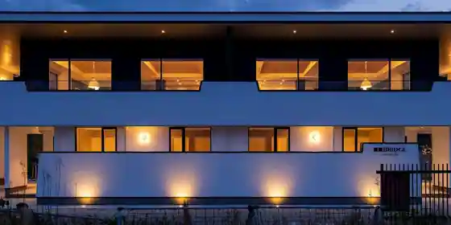
BRIDGE coastal villa
URBAN&BEACH
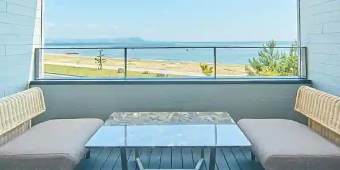
URBAN&BEACH
Inn in Iwaya, Awaji with scenic views.
S.STAIRS
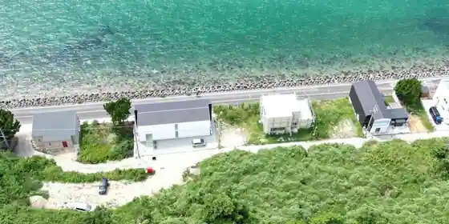
S. STAIRS
Inn in Kusakaori, Awaji with one group per day.
TOTOシーウィンド淡路
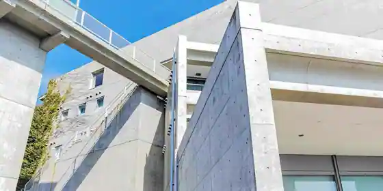
TOTO Shiuindo Awaji
Inn in Sato, Awaji with scenic views.
Dining
淡路島 亙
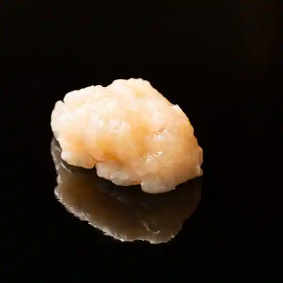
Awaji Shima Ko
すし 藤森
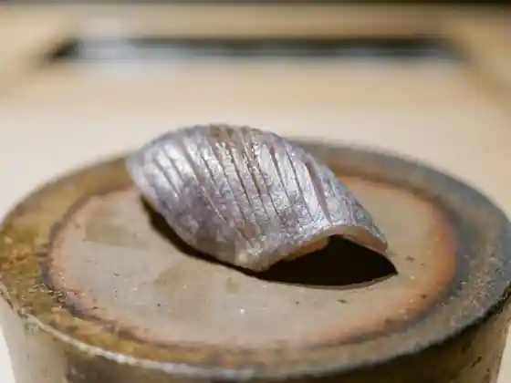
Sushi Fujimori
パスタ フレスカ ダンメン
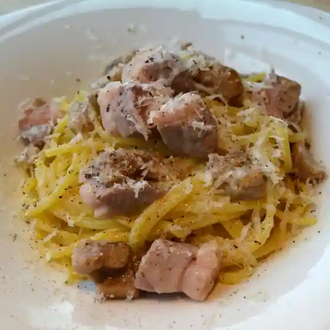
Pasta Furesuka Danmen
ありい亭 中田店
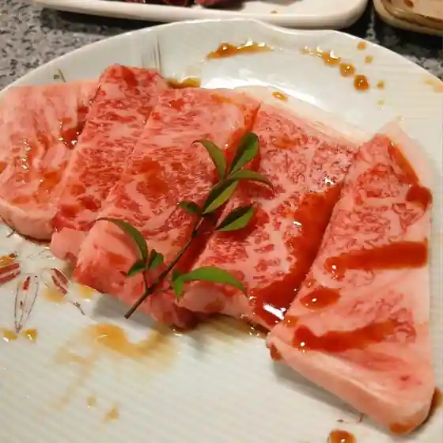
Ari Tei Nakada
こゝちよ
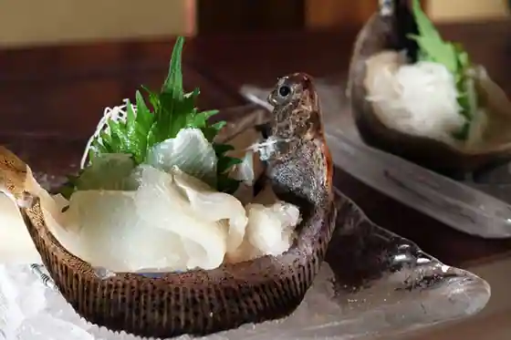
Ko Chiyo
麺乃匠 いづも庵
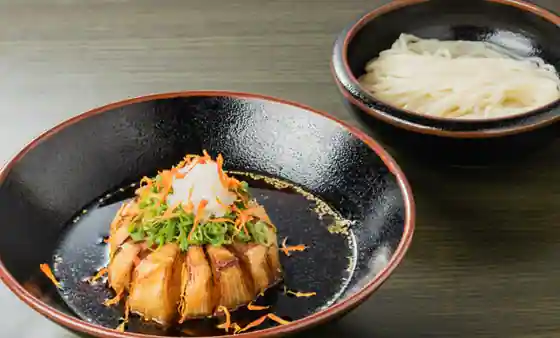
Men No Takumi Izumo Iori
たこせんべいの里
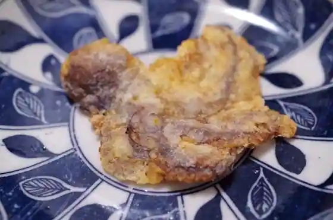
Takosenbeino Sato
希凛 淡路店
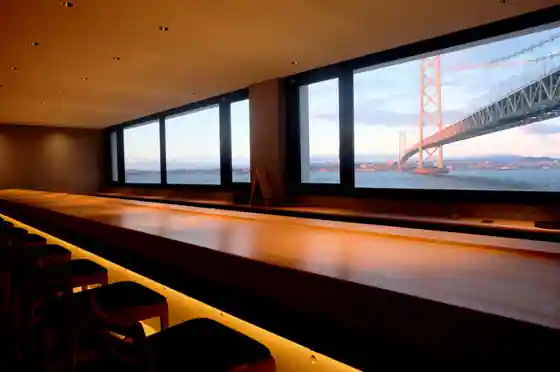
Mare Rin Awaji
淡路島 鼓や
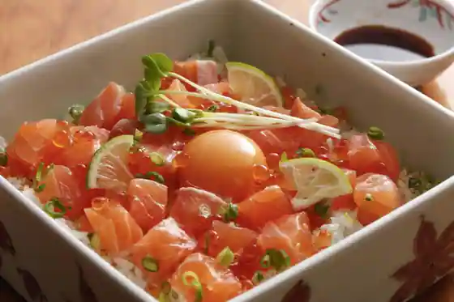
Awaji Shima Tsuzumi Ya
レストラン 大公
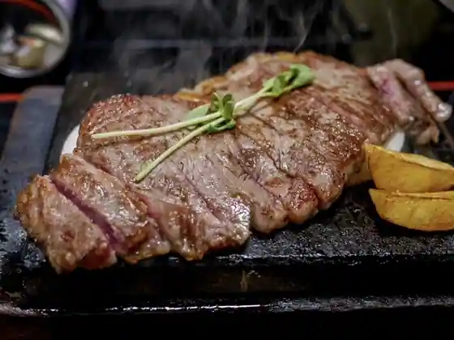
Restaurant Taiko
淡路翁
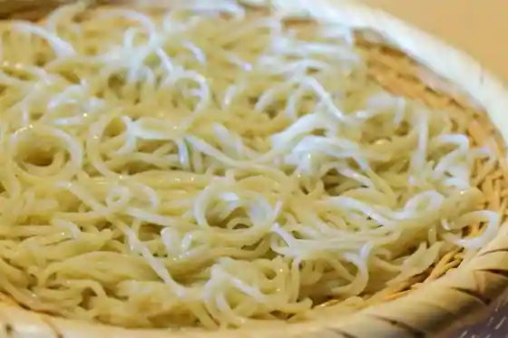
Awaji Okina
コッコラーレ スペシャリテ
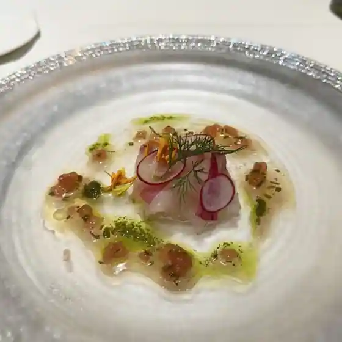
Kokkorare Supesharite
新島水産 東浦店
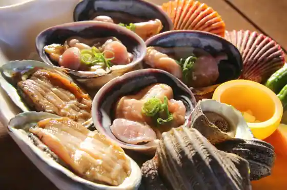
Nijima Suisan Higashiura
魚増鮮魚店
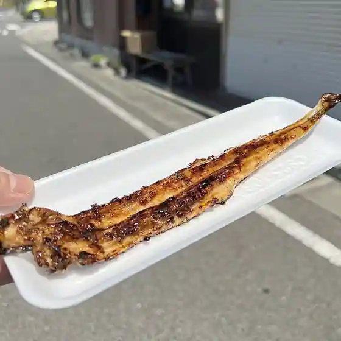
Uomasu Sengyo
焼肉 力
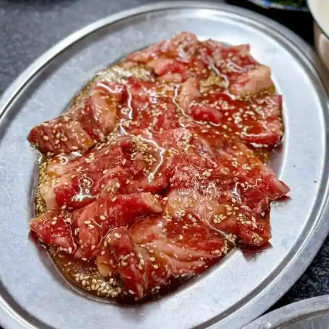
Yakiniku Chikara
こぞらのおやつ
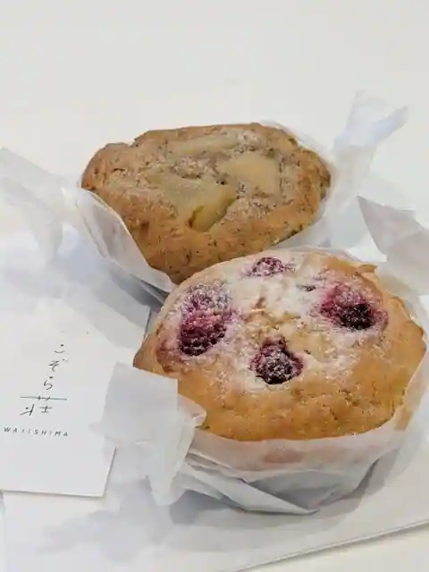
Kozoranoyatsu
ステーキハウス genpei
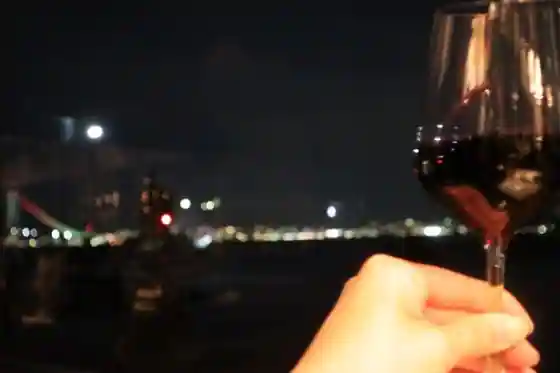
Steak House genpei
おさかな共和国 えびす丸
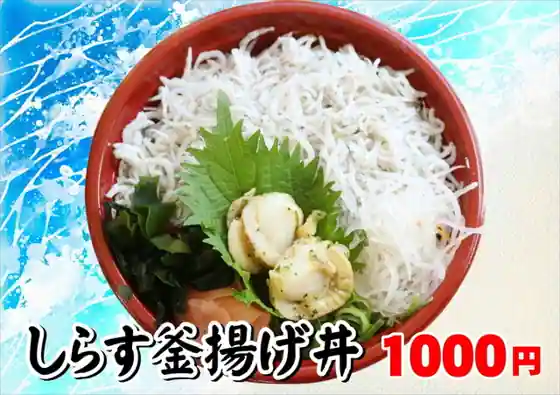
Osakana Kyowakoku Ebisu Maru
ガーブ コスタ オレンジ
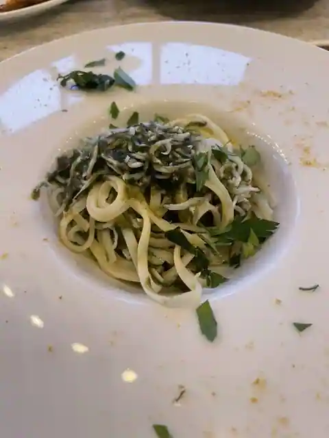
Gabu Kosuta Orenji
TAKAMURA COFFEE ROASTERS FACTORY&CAFE 淡路島店
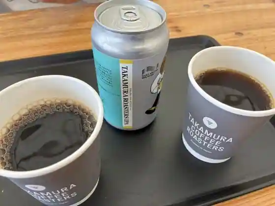
TAKAMURA COFFEE ROASTERS FACTORY&CAFE Awaji Shima
グリナリウム淡路島
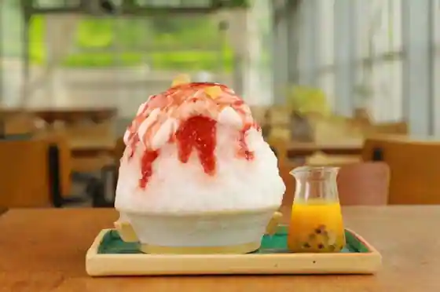
Gurinariumu Awaji Shima
お食事処 浜ちどり
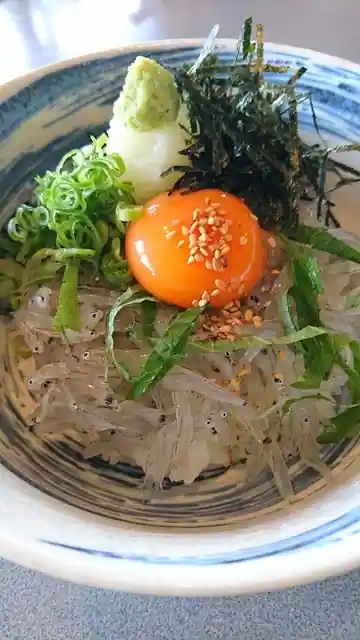
O Shokuji Tokoro Hama Chidori
金太郎 東浦店
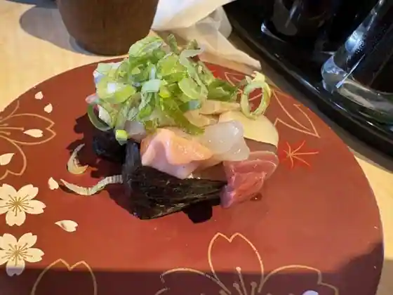
Kintaro Higashiura
クラフトキッチン
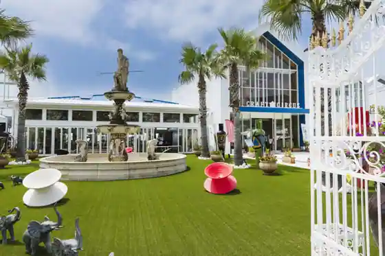
Kurafuto Kitchen
Sights
MUKU FARM
Smile∞Farm
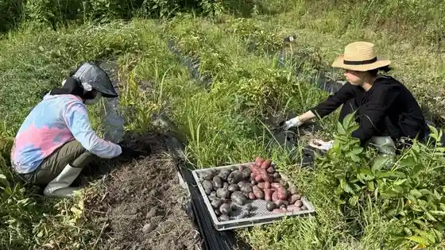
Awaji Hana Sajiki
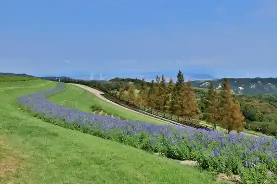
Nijigen no Mori
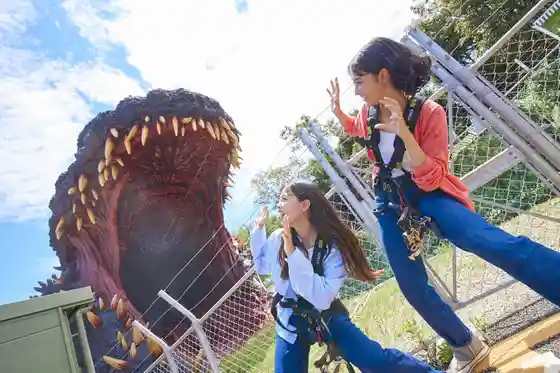
Buruberiihiru Awaji
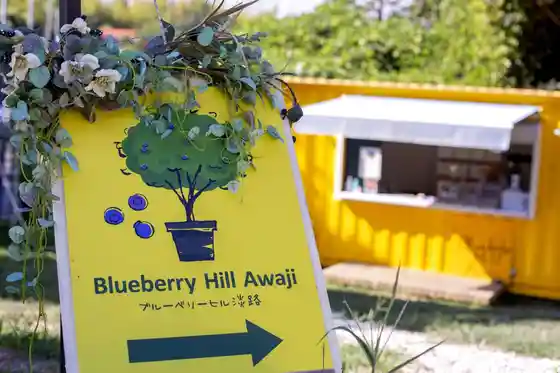
Fuki Modoshi Village
Shima Kaoru Budobatake
Hirota Farm
Awaji Kantorii Garden Farm
Awaji Warudo Park ONOKORO
Awaji Yume Butai
Awaji Shima Gurume Ya Farm (Awajishima Gourmet Farm)
Awaji Shima Monkii Center
Nagasawa Natto Mise